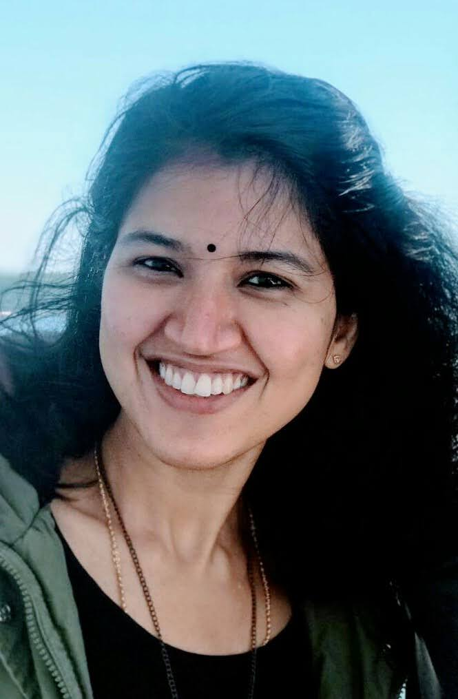

Anupama Chingacham
PhD Candidate(SFB 1102)
Saarland University(UdS)
Spoken Language Systems (LSV)
Chair of Computational Linguistics (CoLi)
This site is under development.
News
- June 30, 2023 Invited talk at EXPRESSION team in IRISA, France.
- Jan 30, 2023 Invited talk at COG-MHEAR team in Edinburgh Napier University, United Kingdom.
- Jan 9, 2023 Poster presentation at SLT, Qatar.
- Sept 6, 2021 Our work received a Best Student Paper award at Interspeech!
- Sept 1, 2021 Paper presentation at Interspeech, Czechia (and online).
- Dec 10, 2018 Paper presentation at CLiC-it, Italy.
Publications
A Data-Driven Investigation of Noise-Adaptive Utterance Generation with Linguistic Modification Chingacham, Anupama and Demberg, Vera and Klakow, Dietrich Ninth IEEE Spoken Language Technology Workshop, 2023
Exploring the Potential of Lexical Paraphrases for Mitigating Noise-Induced Comprehension Errors Chingacham, Anupama and Demberg, Vera and Klakow, Dietrich 22nd INTERSPEECH Conference, 2021
Generalizing Representations of Lexical Semantic Relations Chingacham, Anupama and Paperno, Denis Fifth Italian Conference on Computational Linguistics, 2018
Trajectory
-
Doctoral studies
University of Saarland, Germany
Oct 2018 - present
Pi-SPIN: Paraphrase to improve Speech Prception in Noise. -
Research Intern
Loria, CNRS, France
Feb 2018 - July 2018
Explored an unsupervised method to represent lexical relations.
Published our findings at CLiC-it conference. -
MSc Natural Language Procesing
Lorraine University, France
Sept 2017 - July 2018
Acquired knowledge on lexical resources, NLP formalism and data modeling techniques.
-
Networking Engineer Consultant
Cisco Systems Pvt Ltd (India)
Sept 2014 - Aug 2017
Automated applications migration plan generation.
Orchetrated application migration for multiple service providers.
-
-
Masters in Software Engineering (5 Year Integrated)
Vellore Institute of Technology, India
2009 - 2014
A recipient of Top 10 Academic Performers award for 4 years.
CGPA: 9.2/10